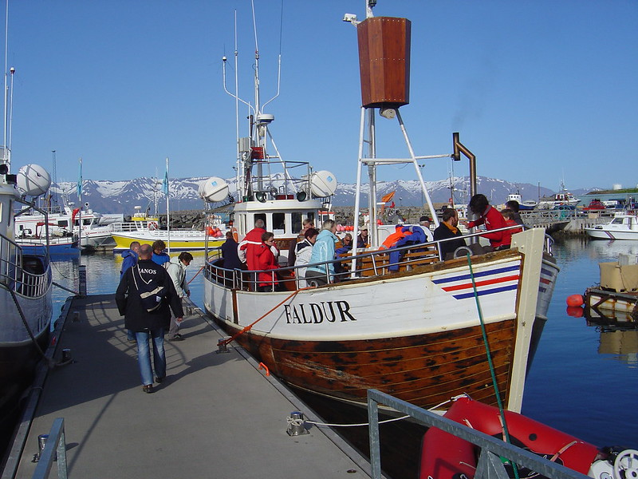

Log: IJsland
In de zomer gingen we mee op het schip Faldur. Het doel van de vaartocht was om walvissen te gaan spotten ten Noorden van IJsland. Het was een prachtige zonovergoten dag met weinig wind. Het zicht was uitstekend om ver te kijken en dus ideaal voor onze walvisexpeditie. Samen met de bemanning van de Faldur tuurden we uren over het water. Het geduld werden beloond met het spotten van een drietal bultrug walvissen. Deze immense dieren bleven wel een half uur in de buurt en dat was een adembenemend gezicht.

Logboekgegevens:
- Windkracht 3
- Windrichting noord
- Zonnig
- Temperatuur 5 ℃